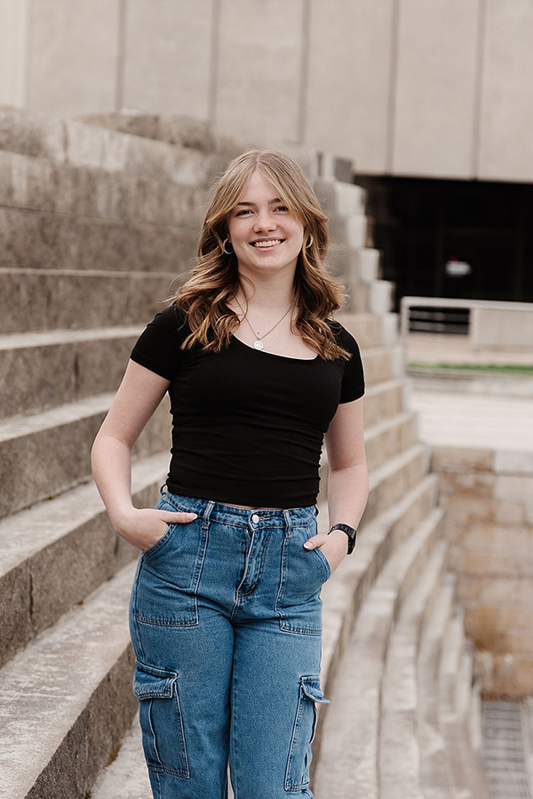

About Myself
Hi, I'm Kenna! I love art of course but I also have a love for finding new music genres to listen to and I enjoy collecting vinyls. I also love rainy weather, learning about birds, and playing card games. I love to pick up new hobbies to get better at like crocheting, chalkboard design, woodworking, photography, jewelry making, nail art, and cooking.
About My Art
I currently enjoy realism and making art of birds. I have always enjoyed art and I am looking for a way to make an impact with my art and pursue a job in the field. I graduated at Westlake High School and have plans to get an Art Education bachelors degree at Utah Valley University.
Current Skills
- Watercolor
- Acrylic
- Pointilism
- Graphite
- Charcoal
- Ceramics
- Colored Pencil
- Printmaking
Get to Know Me Questions
- What Does Art Mean to Me?
- Art can mean a lot of different things to me depending on my stage in life and what I need. Sometimes it is a form of expression, sometimes a challege, and sometimes an escape from real life.
- What Am I Currently Working on?
- I am currently working on my skills in portrait and perspective drawing to be able to draw people and architecture from real life.
- What Are My Future Goals?
- A short term goal I have is to build my art style into something specific and recognizable and into something that means a lot to me. A long term goal I have is to become an art teacher to inspire students to love art just like how my teachers in high school have done the same for me.
Art Related Classes I've Taken in Order
- Ceramics 1
- Art Foundations 1
- Art Foundations 2
- Studio Art
- Ceramics 2
- Drawing 1
- Art Honors
- Printmaking
- Commercial Art
- AP Art
- Art 1400-Computer Graphic Applications (In Progress)
- Art 1110-Drawing 1 (In Progress)